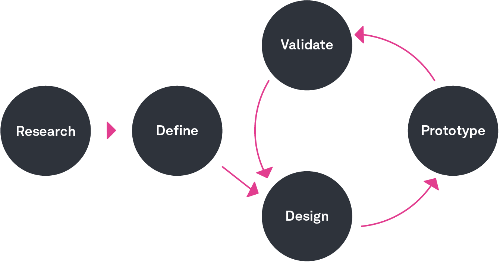
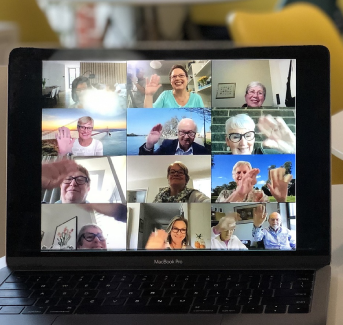
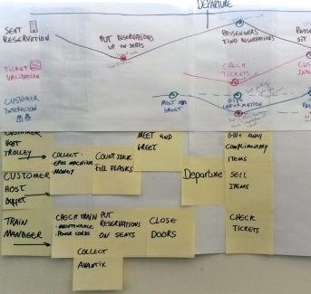

{kind=link}
{kind=link}
{kind=link}
{kind=link}
The Context:
AccuV requires a new Item Management System to meet the needs of all departments.
My Role:
Product Designer (Research / UX / UI)
The Objective:
Create a user-friendly system with centralized data, intuitive interface, robust search, and seamless integration for all departments.
Process:
1. RESEARCH
2. CONCEPTUALIZE
3. DESIGN
1. RESEARCH
2
3
The expectation for the new system:
· What departments could be benefited from the new system?
· Current frustrations and pain points?
· What the teams really need?

Intensive commutations with different departments
· Questionnaires through emails
· Meetings with teams
· Gather information and investigation
Takeaways:
· Different teams have distinct requirements from the shared data.
· Item data need to be updated by different departments regularly.
· The current search function is inadequate.

1
2. CONCEPTUALIZE
3
Overwhelmed with insights, we needed to start prioritizing to form a strategy.
· Understand pain points, desires, and needs of the users.
· Categorize and classify all the gathered insights.
· Present our synthesis to stakeholders.
Jumped into secondary research to form our product strategy and experience.
· Affinity map.
· Prioritized customer painpoints, wants and needs.
· Presented the insights to stakeholders.
{kind=link}
{kind=link}
Affinity map
(Interesting Takeaways)
· Different department update specific portions of the raw data.
· We can potentially provide an API to suppliers for uploading data sheets.
· Each team need to generate new files from raw data.
{kind=link}
Customer journey map
(Interesting Takeaways)
· IM1.0 requires significant post-retrieval work.
· No dedicated pages for individual departments.
· Some data is not updated.

Key takeaways
· Data need to be updated by deifferent departments regularly.
· Unique sheet templates are necessary for each department to update data.
· Search function is key to improve proficiency.
1
2
3. DESIGN
User Flow Rebuilt
IM 1.0: One department handles all responses, while the other departments retrieve the same raw data.
{kind=link}
IM 2.0: Customized modules have been developed for each department while still retaining shared functions.

Create / Update Items

Search Items

Filter Search Content
Information Architecture Rebuilt
Information Architecture is rebuilt to serve better each department's needs.
{kind=link}
Layout Anatomy
By employing an end-to-end design language, we crafted user experiences that were intuitive, visually appealing, and user-friendly.
{kind=link}
Design System
The design system followed a consistent approach to ensure that all elements were cohesive and worked together seamlessly to create a unified user experience.
{kind=link}
{kind=link}
UI Samples
Below included a selection of UI samples. 300+ UI pages produced in total.
{kind=link}
{kind=link}
{kind=link}
{kind=link}
{kind=link}
{kind=link}
{kind=link}
{kind=link}
{kind=link}
{kind=link}
Key Findings:
- Building a project that has already been established brings unique and thrilling challenges that differ from starting from scratch.
- The team is crucial to the success of the project, as the collaboration of talented individuals is what led to the impressive results.
- A clear and concise design is essential for effectively communicating information to any audience.